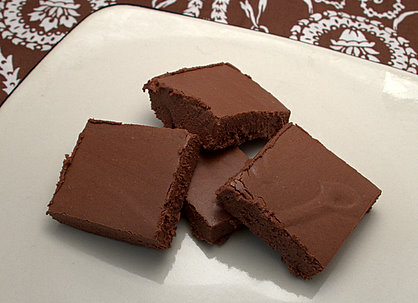

|
||
Premium Patterns Wintry Mix Mitts Love Bytes HawkeyeFree Patterns Kiddie Cadet Summerlin Ruffled Scarf Seamless DS Sock Simply Seamless Pouch Myriads of MushroomsExtras DIY Mitten Blocker Felt Patch Tutorial Yarn Dyeing Tutorial Needle Pouches Knitting Journal |
June 05, 2007 - Posted by Grace SchneblyYummers! Something you might not know about Alice and I is that we both really enjoy baking and candy making as well as crafting and knitting. Every year in 4-H we would bake for three days straight right before the Kittitas County Fair. We made all sorts of things like cakes, candy, cookies, muffins… we pretty much made a version of anything you can think of. I don’t want to brag, but we were good at it too! One of the judges favorites every year was the Creamy Chocolate fudge that either Diane or Alice made. I never got to make the recipe because I was the youngest, and I guess they just got priority (not that I didn’t get my fair share of winning recipes). Our mom has an amazing set of recipes and we owe a lot of our success to her for finding the recipes, helping us get organized, and buying all the supplies. She really is the most amazing cook and baker you could ever find. I can only imagine how difficult now it was for her to organize three of us to make sure we all were able to get everything baked with only one oven. I have really fond memories of baking for the fair watching Gilligan’s Island marathons on TV and eating tons of the goodies we made. I don’t know where this recipe came from, but we have been using it in my family for as long as I can remember. Usually it is only made on special occasions like Christmas and, of course, the county fair, but I decided I would try making it today just for a break from crafting. Fudge can be so finicky, and this was the first time I ever made it by myself. You have to make sure that you stir the sugar/milk mixture the entire time it is over heat, but you can’t scrape or touch the sides of the pan with your spoon or else you will knock sugar crystals off into your mixture causing the fudge to become grainy. It really is a labor of love, but definitely worth it. It is super rich, so if you like chocolate and fudge you should give it a try! The recipe is actually really easy to follow and it makes a pretty big batch of fudge, one whole 15x10 inch cookie sheet full. And of course the best part of making fudge is scraping out the bowl after you pour the mixture into the cookie sheet. Scraping out the left over sugar/milk mixture is really good too, it is kind of like dulce de leche. Mmmmm! Well here’s the recipe (I leave out the pecans BTW)… Creamy Chocolate-Pecan Fudge Place Chocolate, marshmallow cream, and pecans in a large bowl; set aside. In large heavy saucepan combine milk, sugar, butter, and salt. Bring to boil, stirring; boil slowly 9 minutes. Pour at once over chocolate mixture; add vanilla. With wooden spoon stir vigorously until chocolate is melted and mixture is creamy. Pour into buttered 15x10x1-inch pan or large tray lined with waxed paper. Smooth top. Chill until firm. Cut into 1 inch squares. Makes about 150. NOTE May be garnished with pecan halves before chilling. Good luck making them! I have to warn you that they are almost impossible to cut if it is warm out because they are so creamy and good; they’ll melt in your mouth (and on your hands too if you’re not careful)! |
   Recent ReviewsRecent Posts
 Our Favorites
|
| © 2007 KathrynIvy.com | ||